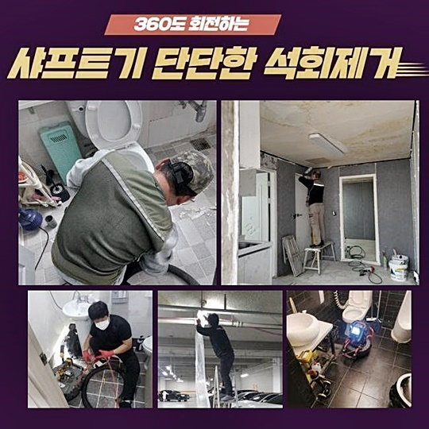
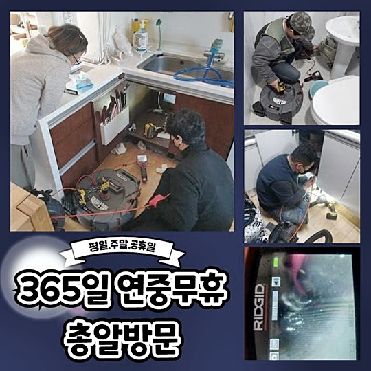
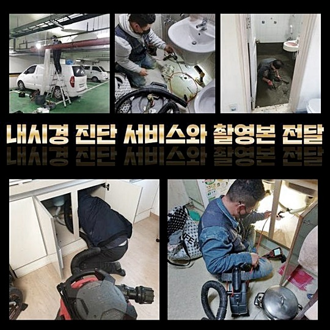
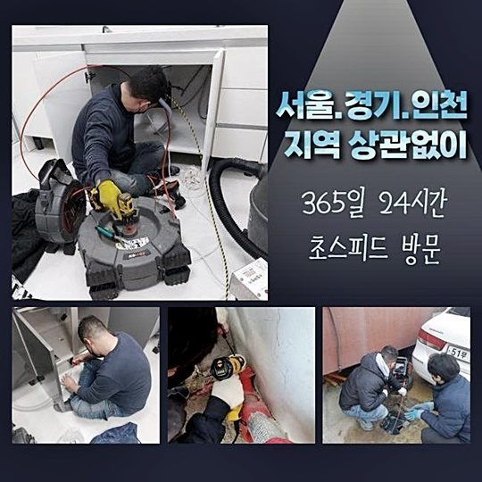
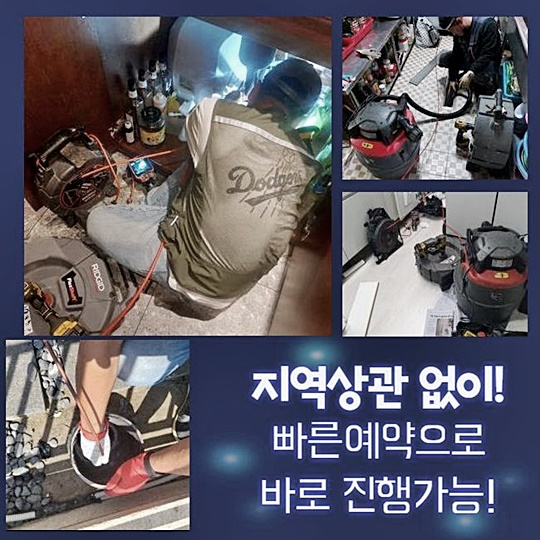
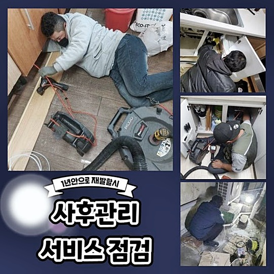
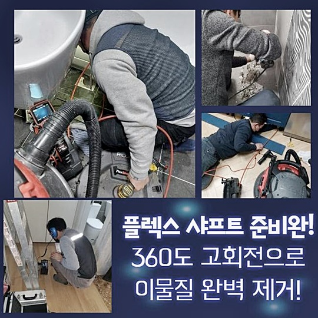

🏠 동대문 장안동싱크대역류 이문동 배수구뚫기 해결방법
용인 싱크대막힘 전문 시공 후기

📋 작업 개요
- 위치: 용인
- 서비스 유형: 싱크대막힘, 하수구막힘, 배관막힘, 역류해결, 뚫는업체, 배관청소, 고압세척, 설비공사, 악취차단
- 작업 일시: 2024. 6. 26. 9:21
- 업체명: 하수구수사대 (010-5615-2118)
🔍 문제 상황
동대문 장안동싱크대역류 이문동 배수구뚫기 해결방법
급작스레 배관에서 고장이 나타났던 때가 몇 번쯤은 있으셨을 거라 생각하고 있습니다
어느 순간 욕실 배수관이 넘치는 사태가 일어나 하수관 개문을 실시하신 기억 또한 알게모르게 있을 것으로 보고 있는데요
하수관 내측으로 쓰레기들이 진입하게 되면 초기엔 양호하겠으나 계속해서 누증되면 정체가 일어나게 되는거죠
욕실을 이용하지 못한다면 생활 자체의 불편이 증가하게 돼요
차단이 생겨난 파이프를 고쳐내려고 나뭇가지 등도 삽입해보고 뚫어뻥액상도 부어봤는데 뚫어내지 못했다면 파이프 뚫음 전문가에게 신속히 전화하여 처치할 것을 권장해요
방치는 의도와 다르게 상태를 좋지 않게 변모시킬 수 있단 걸 넘겨 버리면 안됩니다
금일은 배관 클리닝에 관한 이야기와 갑자기 정체된 사태 가운데 적절하게 조처하는 방책을 선보여 드리겠습니다
이번 글에서 소개하여 드릴 지점과 흡사한 막힘으로 난해한 상태라면 심층적인 대처가 요청되죠
안내드릴 처소는 의뢰인의 시급한 방문요구에 즉시 출동하였던 곳입니다
제조설비 측면에 있는 하수구가 차단되어 본업무에 난관이 생겨버렸어요
현장에 가보니 관이 깊었고 막힌 곳이 격원했어요 수리가 쉬이 이루어지지 않을 거라는 걸 관측할 수 되었어요
빠른 해결이 필요했기에 파이프의 일부 구간을 관통해보기로 했어요

🔎 원인 분석
💡 전문가 진단: 정밀 진단 장비를 사용하여 슬러지의 고착 여부를 판명하고 타격/세척 작업을 실시했습니다.
물의 이동이 이루어지지 않았으므로 안을 들여다볼 수 없는 경우였죠
이에따라 온전한 사안 판정이 난해하므로 배관 촬영기기를 통해서 상황을 간파하기로 하였답니다
내측에 잔재가 매우 많았어요 살펴보니 슬러지 뭉치였어요
건물관리자께서 세척 용액을 활용해봤지만 해결되는 모습은 볼 수 없었다고 합니다 배수시스템이 가동될 수 없게끔 안의 찌꺼기들이 점유하고 있었어요
내시경cctv를 통하여 좀더 면밀하게 들여다보니 집수시설부터 관로까지 이어져있는 부분에 문제가 생겨 액체가 넘쳐나고 있던 거였죠
초기 예측과 차이나게 꽤 많은 지점이 굳어진 노폐물들로 메워 있었답니다
가공품을 생산하는 과정에서 발생한 기름등에 기인한 노폐물이 상당히 많아 보였답니다
관리자께 가운데 쪽 하수관을 관통하는 것이 효과적이라는 설명을 드린 후 추후 내용을 고지드린 뒤 일을 시작했죠
전체적인 업무와 관련한 동의를 얻고 내부에 매립된 배수관부터 바깥의 관로까지 소청하였답니다
노폐물의 양이 상당하였기에 초기 작업을 한 다음에 이와 관련된 공장의 파이프들도 기계를 투입해서 처치해야 하죠
이때에는 플렉스샤프트 분쇄공구를 투입해야 하는데요 이 장비는 머릿부분의 쇠사슬이 회전해나가며 안에 체류하는 노폐물을 깎아내는 노릇을 하고 있어요
가끔가다가 의뢰인께서 고속으로 돌면서 관에 트러블이 나타나지는 않을지에 대해 우려하시는 경우도 계신데요
미숙한 능력을 토대로 경솔하게 작업할 때에는 배수관에 문제가 일어나기도 하겠지만 저희처럼 숙련성을 갖춘 이들에겐 맞지 않는 이야기라는 걸 안내드립니다
배관카메라로 내측을 체크하면서 고착화가 심화된 곳과 까닭을 알아낸 뒤 본시공에 돌입하였죠

🔧 작업 과정
공장내부에서 나온 물에 노폐물들이 가득히 채워진 상황이었죠
플렉스샤프트 장비를 통해 쓰레기들을 없애나가는 걸 호기심있게 쳐다보시더니 개운한 마음이 든다고 표현하셨어요
긴 구간이었으나 굴토한 부분을 기초로 해서 빈틈없이 청소를 이어나갔답니다
해당 지점에서는 기름때가 자주 유출되며 간헐적으로 슬러지가 뭉치기에 신경써서 업무를 한다고 하더라도 역류 및 악취 발생이 생기는 거예요
다량의 쓰레기들을 배출시켰더니 차후 신경써서 사용해야 하겠다며 흡족해 하시더라고요
시설 안에서 수도 사용을 못하는 사태로 발전한 것은 공장의 바깥에 설비된 배수구에서 트러블이 발생하였기 때문이죠
이러한 문제가 생겨나 버린다면 직원에게도 불편함을 줍니다 여러 노폐물들이 맨눈으로 드러날 수준으로 제법 누증되어 있었어요
6개월 이상 세척관리를 하지 않았다고 말하시더라고요
이로인해 배수구를 통해 여러가지의 유분이 흘러들어왔다는 사항을 파악하게 되었어요
공장의 설비가 노후되었기 때문에 배관 또한 낡아졌을 가망성이 높습니다
시설이 노후화되는 부분도 배관막힘이 일어났을 경우에 위험요소라고 볼 수 있어요
잔재들이 점층적으로 누적되면 물흐름을 막기 때문에 배관부속에도 타격을 줄 수 있고 균열이 있었던 자리에선 파열이 생길 수가 있습니다
배관 안의 잔재들은 샤프트분쇄기기를 넣어 족히 해결할 수 있었기 때문에 부수적 고압물청소는 실행하지 않아도 되었죠
고속분쇄 과정을 바탕으로 슬러지들을 종합적으로 소멸시키는 수순을 속행했어요
일상적으로 배관클리닝이 이행되지 않은 장소는 쉽게 막혀버릴 수 있고 물이 넘칠수도 있어요
재빠르게 배수문의 액체가 소멸되지 않고 평상시와 다른 느낌이 든다면 늦지 않게 저희와 같은 베테랑에게 의뢰하실 것을 권합니다
한번이라도 역류나 막힘이 나타났다면 날짜가 지나게 되면 심각해질 수 있어요
재빠른 방문과 수리도 중요하지만 숙련된 담당자를 수문하는 일도 중요하죠
충분한 업력을 가졌는지 사전에 살펴보는 게 좋아요
완성도 높은 테크닉과 장비 일체 이 두가지를 충족한다면 어떤 난해한 막힘이라도 능히 해낼 수가 있답니다
저희팀은 통수작업이 알맞게 실시되도록 고가의 기기들을 이용하고 있어요
뚫음에 적합한 전문적 기기를 활용하도록 플렉스샤프트와 고압청소 장비 일체를 맞춘 다음에 공사현장으로 이동하고 있어요


✅ 작업 완료
노폐물들을 미는 방책으로 일을 속행하고 내시경cctv를 동시에 넣어서 안쪽에 고형물들이 잔류하고 있지는 않은지 보고 꼼꼼히 소제해나가고 있어요
이러한 수순으로 공사를 받아보신다면 쉬이 슬러지가 누적되지 않아서 재발에 대한 사안은 근심하지 않아도 됩니다
갖가지 기름때와 찌꺼기가 사라지게 되었답니다
특별한 문제가 일어난 게 아니라해도 주기적으로 예방하는 업무를 진행하는 경우도 많답니다
의뢰인분께서 편하신 시간에 맞춰 방문해드릴 수 있고 늦은 시간이라도 가능하니 주저하지 마시고 문의해 주세요
내팽개치지 말고 변화가 목격되면 바로바로 수선하시는 걸 권해드리는 바입니다




⚠️ 주방 싱크대 배관 막힘 예방 수칙
- ✅ 기름기가 묻은 식기나 프라이팬은 설거지 전 키친타올로 반드시 기름때를 닦아내세요.
- ✅ 주기적으로 싱크대 개수대에 뜨거운 물을 가득 받아 한 번에 내려 배관 내부 기름을 씻어내세요.
- ✅ 배수구 거름망을 미세한 필터로 사용하시고 음식물 찌꺼기가 틈으로 새어 들지 않게 관리하세요.
- ✅ 베이킹소다와 식초를 뜨거운 물과 함께 일주일에 한 번씩 부어주면 배관 살균과 막힘 예방에 좋습니다.
💡 핵심 정리
- 확실한 장비 작업(내시경 점검 및 샤프트 스케일링)으로 원인을 뿌리 뽑습니다.
- 작업 후 1년 이내에 동일한 부위 재발 시 100% 무상 A/S 서비스를 보장합니다.
- 서울 · 경기 · 인천 전 지역에 24시간 언제든 긴급 출동할 수 있도록 항시 대기 중입니다.
❓ 자주 묻는 질문 (FAQ)
🚨 용인 싱크대막힘 문제로 고민이신가요?
정확한 원인 진단과 확실한 시공으로 재발 없는 해결을 약속드립니다.
24시간 긴급 출동 | 서울 · 경기 · 인천 전지역 | 1년 내 재발 시 무상 A/S